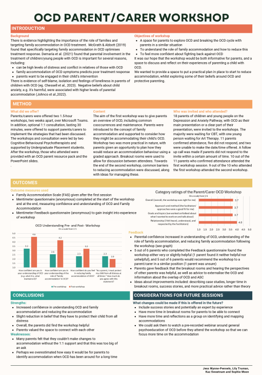
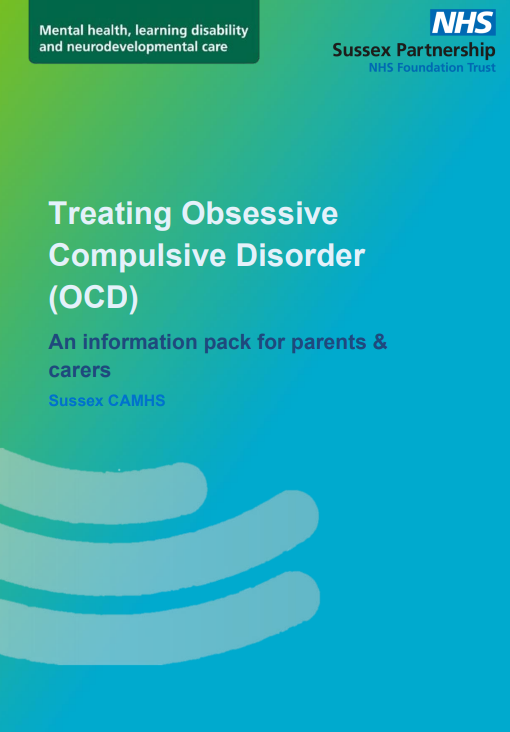
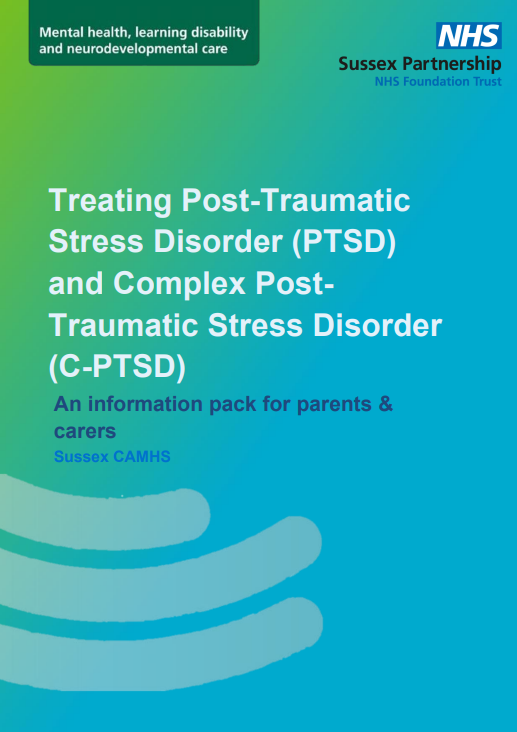

I independently researched and wrote two literature reviews about interventions that CAMHS had previously offered, as well as collaborating with another student to produce a further two literature reviews. These literature reviews were then used to inform the planning of the transformation of CAMHS to be using evidence-based practices
Read the literature reviews here (the pdf will open in a new tab):
I helped faciliate a workshop for parents and carers of young people waiting for CBT for OCD. After the workshop, we offered 1:1 consultations, during which I took mintutes and completed the admin for. Following the consultations and workshop I collabored with the therapists to write up the pilot, including independently analysing the feedback we recieved and creating an informative poster.

In collaboration with clinicians, I helped create information packs to give to parents with resources about PTSD and OCD. My role was to assist with research and to create the packs in a visually appealing and easy-to-read way, whilst following NHS guidance regarding colours and fonts.


I collaborated with the other student on placement to create monthly informative displays for the waiting area. For example, I created infographics about Autism Awareness Month, LGBTQ+ History Month, and Pride.
Prior to this project, individual clincians brought in their own resources, such as fidget tools and prompt sheets, to use in therapy sessions with the young people. The other student and I identified that having a resources box for each clinic room, and an assortment of games for clinicians to use in sessions, would be incredibly helpful for clinicians. We created and sent out a survey to every clincian in Brighton CAMHS, and then created a list of items to be purchased based on the survey results. Additionally, we designed our own prompt sheets, such as breathing techniques, to create a cohesive collection of resources.
Here are some examples of prompt sheets and flashcards in our resource boxes:
I took a lead role on the Neurodevelopmental Pathway - Experience of Service Questionnaire (ND ESQ) project. This involved:
While creating the monthly infographics for the waiting room, the other student and I reflected that there was no space within CAMHS for support resources to be pooled for convenience. In particular, there was confusion in CAMHS around what resources we could recommend to young trans people following the Cass report. We decided to create a padlet of approved resources, both for clinicians to pull resources from, and to give to families using CAMHS.
We created two padlets: one for generic support resources, and one specifically for the Neurodevelopmental Pathway
A tradition of the placement students at Brighton CAMHS is to create a monthly board of appreciative messages staff members send in about each other. The other placement student and I happily continued this tradition, fostering a welcoming and positive working environment for all the staff working there.
Reading what staff members were thakful for, as well as witnessing their positive reactions upon receiving the kind messages, was lovely. In particular, one doctor mentioned that the tradition made entering her new role much easier, as it made the atmosphere of the office feel accepting and kind.
Here are a few examples of appreciations that the other placement student and I received:
Using feedback from the Experience of Service Questionnaire, I collaborated with the other placement student to perform a thematic analysis and write it up in a report. This was then used to inform improvements to the service in the planned transformation of the NHS.
Download it here
As part of the Participation team, I took on a project of updating the displays in the CAMHS corridors. In order to create a talking point for the young people, and to create a happy display, we decided to create a collection of staff and service user's pets and how they improve their owners' moods. This was incredibly popular, and expanded to fill 4 displays along the corridor. Clinicians reported back to me how grateful they were for this project, as it often led to the young people pointing them out and talking about their own pets, initiating rapport between them and the clinician. Included on the wall is CAMHS's very own therapy dog, Hettie!